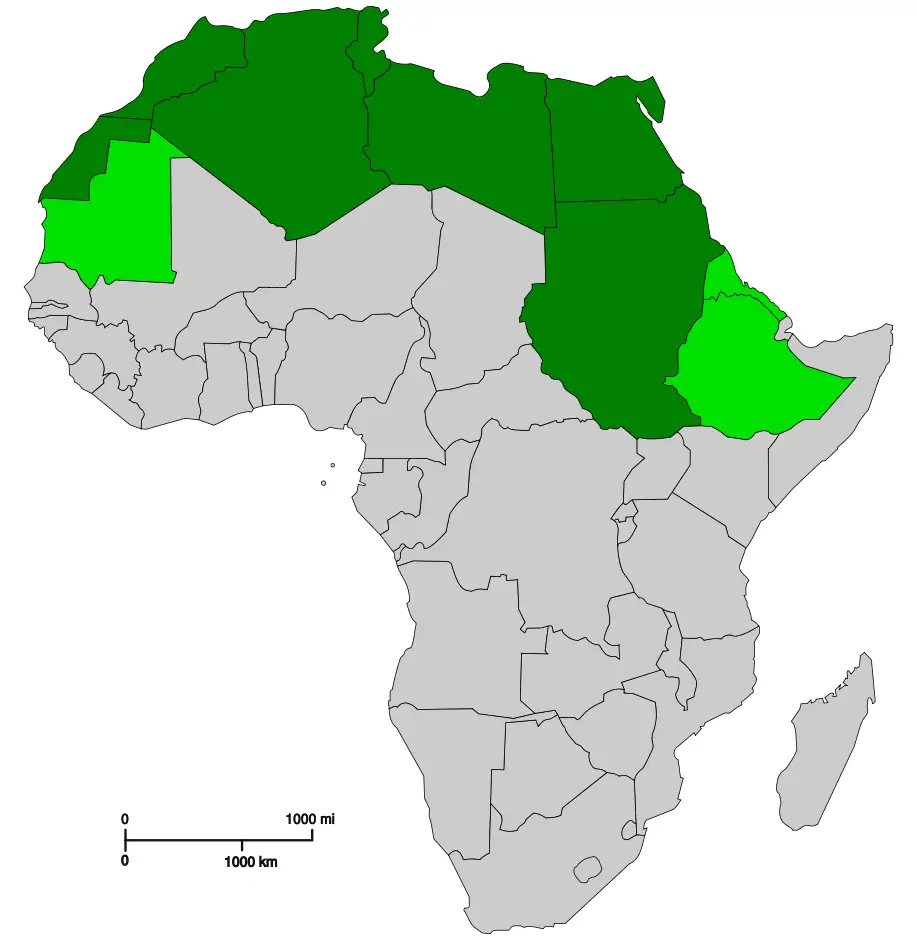
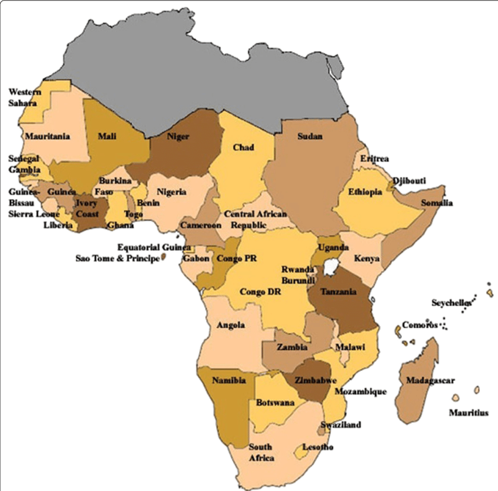

Best advice for trips to Africa
Northern Africa
The North of Africa mainly consists of the countries, Morrocco, Algeria, Tunisia, Libya, Egypt, Sudan and Mauritania

The North of Africa is home to the sahara desert, one of the Largest deserts in the world and it covers most of the northern Africa. This makes the north very hot and very dry
When you travel here you will need lots of water and probably won't need a jacket. The best times to visit North Africa is during the spring time. Here it is not too hot and it also doesnt get
too cold either making the weather very pleasent.
Sub Saharan Africa
Sub saharan africa contains most of the countries that are in Africa that are not the Northen African Countries.

Sub saharan africa has less desert and has a more tropical climate. There are more jungles and more Savannas. They are home to many more animals from Lizards to Elephants
The best time to visit if you want to see many animals and wildlife is during dryer seasons normally between June and September as animals congregate around water for people to see.